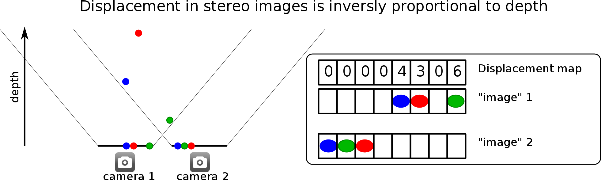
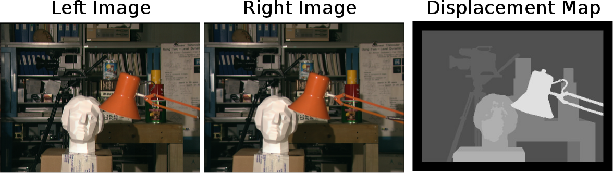
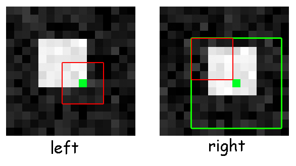
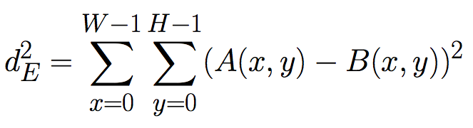
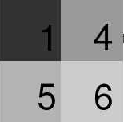
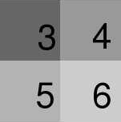
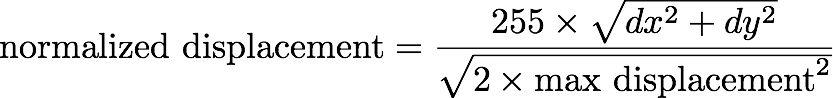
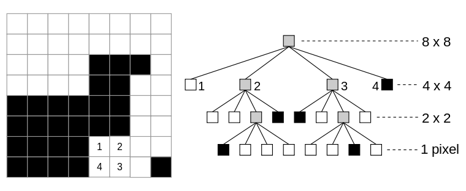
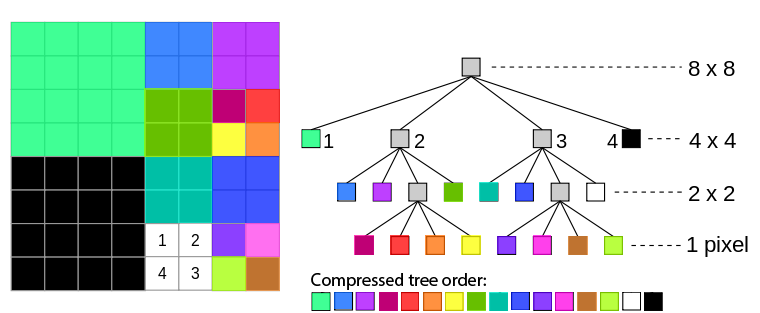

Aclaraciones/Recomendaciones
- Empiece pronto!
- Este proyecto puede realizarse en parejas o individualmente. Usted puede compartir código únicamente con su pareja.
- Asegúrese de leer todas las especificaciones del proyecto antes de iniciarlo.
Objetivos
Este proyecto le permitirá conocer C y MIPS con mayor profundidad. La primera parte le da la oportunidad de mejorar sus habilidades de programacion en C, principalmente en el uso de punteros y estructuras, mientras que en la segunda parte deberá usar el lenguaje MIPS. Parte de este proyecto también servirá como base para el proyecto 3. ¡Esperamos que se divierta!
Background
Las cámaras tradicionalmente capturan una proyección bidimensional de una escena. Sin embargo, la información de profundidad es muy importante para muchas aplicaciones en el mundo real. Por ejemplo, la navegación robótica, reconocimiento de rostros, gestos o reconocimiento de posición, digitalización en 3D y más. El sistema visual humano puede percibir la profundidad mediante la comparación de las imagenes captadas por nuestros ojos. Esto es llamado "stereo vision". En este proyecto vamos a experimentar con una simple técnica de computer vision/image processing, llamada "shape from stereo" que, al igual que lo hacen los humanos, calcula la información de profundidad a partir de imagenes stereo (imagenes tomadas desde dos lugares distintos).
Depth Perception
Los seres humanos pueden saber qué tan lejos está un objeto mediante la comparación de la posición del objeto se encuentra en la imagen del ojo izquierdo con respecto a la imagen del ojo derecho. Si un objeto está muy cerca de usted, su ojo izquierdo verá el objeto más a la derecha, mientras que el ojo derecho verá el objeto a la izquierda. Un efecto similar se produce con cámaras que se compensan con respecto a la otra como se ve a continuación.

La ilustración de arriba muestra tres objetos a diferente profundidad y posición. También muestra la posición en la que los objetos se proyectan en la imagen en la cámara 1 y la cámara 2. Como se puede ver, el objeto más cercano (verde) se desplaza más de la imagen 1 a la imagen 2 (6 pixeles). El objeto más lejano (rojo) se desplaza la menor cantidad de pixeles (3 pixeles). Por lo tanto, podemos asignar un valor de desplazamiento para cada pixel en la imagen 1. El arreglo de desplazamientos se llama mapa de desplazamiento (displacement map). La figura muestra el mapa de desplazamiento correspondiente a la imagen 1.
Su tarea será encontrar el mapa de desplazamiento mediante un sencillo algoritmo de coincidencia de bloques. Dado que las imágenes son de dos dimensiones, necesitamos explicar cómo se representan las imágenes antes de describir el algoritmo.
A continuación se muestra un ejemplo clásico de imágenes stereo y el mapa de desplazamiento se mostrará como una imagen.

Parte A
Objectivo
Vamos a intentar simular la percepción de profundidad en la computadora, escribiendo un programa que puede distinguir objetos que se encuentran cerca o lejos.
Empezando
Copie los archivos necesarios en su directorio de trabajo, introduciendo el siguiente comando:
$ git clone https://github.com/cc-3/PJ1_1.git
Los archivos que necesita modificar son:
-
calc_depth.c: Crea el depth map a partir de dos imagenes. Usted debe implementar la funcióncalc_depth(). -
make_qtree.c: Crea la representación quadtree de un depth map. Usted debe implementar las funcionesdepth_to_quad()yhomogenous(). -
proj1_1A.txt: Sus respuestas a las preguntas presentadas deben ir aquí.
Usted es libre de definir e implementar funciones adicionales, pero sólo puede hacerlo en los archivos calc_depth.c o make_qtree.c. Los cambios que realice en cualquier otro archivo se sobrescribirán cuando se califique su proyecto
El resto de los archivos son parte de la estructura del proyecto. Puede ser útil examinar todos los archivos.
Makefile: Define todos los comandos de compilación.depth_map.c: Cargas imagenes bmp y llama a la función calc_depth() para calcular el depth map.calc_depth.h: Define la firma para la función calc_depth() que usted debe implementar.make_qtree.h: Define la firma para las funciones depth_to_quad() y homogenous() que usted debe implementar.quadtree.h: Define la estructura qNode, así como cabeceras de la función quadtree.c.quadtree.c: Llama a las funciones depth_to_quad() y free_qtree().utils.h: Define la estructura Image y la firma de funciones de utilidad.utils.c: Define las funciones para cargar, imprimir, y guardar imagenes bmp.test/: Contiene los archivos necesarios para probar su código. En images/ se encuentran las imagenes de entrada, output/ contiene los archivos creados por su programa, y expected/ contiene la salida correcta para los archivos de prueba.
Su primera tarea será implementar la función que genera el depth map. Esta función recibe como argumentos dos imagenes (unsigned char *left y unsigned char *right), que representan los que se ve con el ojo izquierdo y el derecho, y genera un depth map usando el buffer de salida que asignamos para usted (unsigned char *depth_map).

El primer paso es tomar un pequeño parque (aquí 5x5) alrededor del pixel verde. Este parche es representado por el rectángulo rojo. LLamaremos a este parche feature. Para encontrar el desplazamiento, nos gustaría encontrar la posición del correspondiente parche (feature) en la otra imagen. Podemos hacer esto mediante la comparación de los parches (features) de tamaño similar en la otra imagen y elegir el más parecido. Por supuesto, comparar contra todos los parches posibles sería mucho tiempo. Vamos a suponer que hay un límite de cuánto un feature puede desplazarse -- esto se define como espacio de búsqueda (search space) representado por el rectángulo grande (aquí 11x11). Tenga en cuenta que, a pesar de que nuestras imagenes se nombran "left" y "right", nuestro espacio de búsqueda se extiendo tanto izquierda/derecha como arriba/abajo. Como buscamos sobre una región, si la imagen "left" es actualmente la imagen "right" y la imagen "right" es actualmente la "left", el depth map correcto aún se puede generar.
El parche (feature) fue encontrada en la posición indicada por el cuadro azul en la imagen de la derecha (en la esquina de la caja blanca de la imagen etiquetada como right.
Decimos que dos features son similares si el cuadrado de su Distancia Euclídea es pequeño. Si comparamos dos features, A y B, que tienen ancho W y alto H, su Distancia Euclidea (al cuadrado) está dada por:

(Note que esto es siempre un número positivo.)
Por ejemplo, dados dos conjuntos de imagenes de 2×2:
← el cuadrado de su distancia euclídea es (1-1)2+(5-5)2+(4-4)2+(6-6)2 = 0 →
← el cuadrado de su distancia euclídea es (1-3)2+(5-5)2+(4-4)2+(6-6)2 = 4 →
(Fuente: http://cybertron.cg.tu-berlin.de/pdci08/imageflight/descriptors.html)
Una vez que hemos encontrado el parche (feature) más similar en la imagen derecha, comprobamos a qué distancia se encuentra de parche original (el de la imagen de la derecha) y esto nos dice que tan cerca o lejos se encuentra el objeto.
Inputs
Definimos estas variables en su función (más bien son argumentos de esta):
- image_width
- image_height
- feature_width
- feature_height
- maximum_displacement
Definimos las variables feature_width y feature_height que son las dimensiones del parche, es decir
este tendrá un tamaño de: (2 × feature_width + 1) × (2 × feature_height + 1). En el ejemplo anterior, feature_width = feature_height = 2 lo que da un parche de 5×5. También definimos la variable
maximum_displacement que limita el espacio de búsqueda. En el ejemplo anterior maximum_displacement = 3 lo que significa
que se deberá buscar sobre (2 × maximum_displacement + 1)2 parches en la segunda imagen.
Output
Para que nuestros resultados se ajusten al rango de un unsigned char, debemos "normalizar" la distancia entre el rango de 0 a 255. El desplazamiento normalizado que debe utilizar está dado por:

Esta función está implementada para usted en calc_depth.c.
En el caso del ejemplo anterior, dy=1 y dx=2 son los desplazamientos horizontal y vertical del pixel verde. Esta fórmula garantiza que tendremos un valor que cabe en un unsigned char, por lo que el desplazamiento normalizado es 255 × sqrt(1 + 22)/sqrt(2 × 32) = 134, redondeado a un entero.
Imagenes Bitmap (bmp)
Vamos a trabajar con imagenes bitmap de 8 bits en escala de grises. En este formato (8 bits), cada pixel toma un valor entre 0 y 255,
donde 0 = negro, 255 = blanco, y los valores intermedios representan varios niveles de gris. Los pixels
forman una matriz 2D con image_height filas y image_width columnas. Usted debería estar relacionado con el formato de estas imágenes, ya que las empleo en su proyecto BMP Image Handler en el curso de CC2.
Debido a que cada pixel puede ser uno de los 256 valores, podemos representar una imagen en memoria usando un arreglo de unsigned char de tamaño
image_width * image_height. Guardamos una imagen 2D en un arreglo 1D de tal manera que cada fila de la imagen ocupa una parte continua del arreglo. Los pixeles se almacenan de arriba hacia abajo y de izquierda a derecha (como en la ilustración de abajo):
(Fuente: http://cnx.org/content/m32159/1.4/rowMajor.png)
Podemos referirnos a los pixeles individuales en la matriz especificando la fila y la columna en la que se encuentra. Recordemos que en una matriz, las
filas y columnas se numeran de arriba a la izquierda. Nosostros seguiremos este esquema de numeración, por lo que el cuadro rojo de la izquierda
está en la fila 0, columna 0, y el cuadrado azul más a la derecha está en la fila 2, columa 1. Nos referimos al número de columnas en la imagen como image_width, y el número de filas como image_height. Por lo tanto, la imagen de arriba tiene una anchura de 2, altura de 3,
y el elemento en x=1 y y=2 es el cuadrado azul más a la derecha.
En resumen
Implemente la función en calc_depth.c de manera que genere un depth map y lo guarde (el depth map) en unsigned char *depth_map, que apunta a un buffer (un arreglo de unsignerd char, para ser más preciso) pre-asignado de tamaño image_width × image_height. Las dos imagenes, left y right se proporcionan y también son de tamaño image_width × image_height. Los parámetros feature_width y feature_height describen el alto y ancho de un parche (feature).
Aquí hay algunos detalles de implementación y consejos:
- Un feature es una caja o parche de ancho
2 × feature_width + 1y alto2 × feature_height + 1, en cuyo centro se encuentra el pixel original. - Usted no puede asumir
feature_height=feature_width=maximum_displacement. Todos ellos pueden ser diferentes (e.g. un feature rectangular y no cuadrado). - Los pixeles en el borde de la imagen, cuyos parches (features) izquierdos no encajan dentro de la imagen deben de tener una distancia de 0 (infinito).
- Cuando
maximum_displacementes 0, toda la imagen tendría un desplazamiento normalizado de 0. - Su algoritmo no debe considerar los parches (features) que están parcialmente fuera del area de la imagen. Sin embargo, si el parche de un pixel está completamente dentro del área de la imagen, siempre debe ser capaz de asignar un desplazamiento normalizado a ese pixel. Si esto le parece confuso, pregunte para que no tenga problemas cuando usted implemente su algoritmo.
- Los pixeles siempre deben venir de
unsigned char *left, mientras que en la imagenunsigned char *rightes la que se analiza en busca de features similares o cercanos. - Usted no puede asumir que
unsigned char *depth_mapse ha llenado con ceros. - Usted no puede almacenar variables globales que persisten entre varias llamadas a
calc_depth. - El cuadrado de la distancia euclídea debe calcularse según la siguiente fórmula:
- Después de encontrar la el parche (feature) de la imagen derecha con la menor distancia euclídea (al cuadrado), el desplazamiento normalizado está dado por la fórmula:
- Si uno o varios parches (features) tienen la misma distancia euclídea, deberá considerarse el que tenga un menor desplazamiento normalizado.
- Algunos test cases son proporcionados por
make check. Estas no son todas las pruebas que vamos a realizar al momento de calificar su proyecto, se recomienda que realice sus propias pruebas.
Use make para compilar calc_depth. Su código debe compilar con el Makefile dado:
$ make
gcc -Wall -g -std=c99 -o ....
....
Ahora puede ejecutar ./depth_map para ver las opciones que tiene su programa.
$ ./depth_map
USAGE: ./depth_map [options]
REQUIRED
-l [LEFT_IMAGE] The left image
-r [RIGHT_IMAGE] The right image
-w [WIDTH_PIXELS] The width of the smallest feature
-h [HEIGHT_PIXELS] The height of the smallest feature
-t [MAX_DISPLACE] The threshold for maximum displacement
OPTIONAL
-o [OUTPUT_IMAGE] Draw output to this file
-v Print the output to stdout as readable bytes
La opción -o le permitirá visualizar su depth map como una imagen BMP. En estas imagenes, las regiones azules están muy lejos mientras que las regiones rojas están muy cerca.
Los tests que se realizan no son una garantía de la exactitud de su código. Usted puede ejecutar los tests para su código con make check. Para calc_depth, las imagenes y bytes se escribirán en test/output/TEST_NAME-output.bmp y test/output/TEST_NAME-output.txt. Para quadtree, la salida impresa se escribe en test/output/TEST_NAME-output.txt.
Usted puede utilizar sus propias imagenes BMP de 8 bits (grayscale) para probar el código. Hay funciones auxiliares en utils.c para generar archivos BMP (arreglos unsigned char). Como alternativa puede generarlas con un programa de edición de imagenes como Photoshop.
$ ./depth_map -l test/images/quilt2-left.bmp -r test/images/quilt2-right.bmp -h 0 -w 0 -t 1 -o test/output/quilt2-output.bmp -v
00 00 00
00 ff 00
00 00 b4
Preguntas que debe responder
Después de implementar la función calc_depth(), por favor responda las siguientes preguntas en proj1_1A.txt:
-
Las imagenes
real1-left.bmpyreal1-right.bmpen la carpetatest/images/son fotografías reales de una nota adhesiva en la ventana contra un fondo distante. Ejecute./depth_mapconfeature_width=feature_height= 3 ymaximum_displacement= 14. Guarde el depth map BMP en un archivo llamadotest/output/real1-output.bmp.(Cuando usted ejecuta el comandomake checktambién se genera la imagentest/output/real1-output.bmp.) ¿Qué tan bien identifica el algoritmo la nota adhesiva? ¿Se identifican erroneamente otras cosas como "cerca" también? Explique por qué. -
Repita #1 con
real2-left.bmpyreal2-right.bmp. ¿El algoritmo funciona mejor o peor con estas imagenes? ¿Por qué o por qué no? -
Ejecute
./depth_mapcontest/images/cal1-left.bmpytest/images/cal1-right.bmp. Usefeature_width=feature_height= 0, ymaximum_displacement = 3. Guarde el BMP de salida comotest/output/cal1-output-0.bmp. Ahora, intente configurar los valores defeature_widthyfeature_heighta 1. A continuación intente con 2 y luego con 3. Guarde los BMP de salida comotest/output/cal1-output-1.bmp,test/output/cal1-output-2.bmp, ytest/output/cal1-output-3.bmp. ¿Cómo cambian las imagenes de salida a medida que aumenta el tamaño de las característica? Explique por qué sucede esto.
Parte B
Su segunda tarea será la de implementar la compresión quadtree. Esta función toma un depth map (unsigned char *depth), y genera una estructura de datos recursiva llamada quad tree.
Compresión Quadtree
Los depth map que creamos en este proyecto son simplemente matrices 2D de unsigned char. Utilizamos mapas de bits (imágenes bmp) en este proyecto, pero sería increíblemente ineficiente (debido al espacio ocupado) si cada imagen en el Internet fueron almacenadas de esta manera, ya que los mapas de bits almacenan el valor de cada píxel por separado. En cambio, hay muchas maneras de comprimir imágenes (formas de almacenar la misma información de la imagen cuyo tamaño más pequeño). En la parte 1B del proyecto, se le pedirá a aplicar un tipo de compresión utilizando una estructura de datos llamada quadtree.
Un quadtree es similar a un árbol binario (que usted utilizó en el curso de CC2), excepto que cada nodo debe tener o bien 0 o 4 nodos hijo. Se aplica a imagenes BMP cuadradas cuya anchura y altura puede ser expresada como 2N (¿Por qué, qué pasaría si se aplica a una imagen cuyas filas y columnas no pueden expresarse como 2N?), el nodo root de un árbol representa toda la imagen. Cada nodo del árbol represenra una subregión cuadrada dentro de la imagen. Decimos que una región cuadrada es homogenea Si sus pixeles tienen todos el mismo valor. Si una región cuadrada no es homogenea, entonces dividimos la región en cuatro cuadrantes, cada uno de los cuales está representado por un nodo hijo del nodo padre en el quadtree. Si la región cuadrada es homogenea, entonces el nodo del quadtree no tiene nodos hijo y en su lugar, tiene un valor igual al color de los pixeles en esa región.
Realizamos la comprobación de la homogeneidad de las regiones de la imagen representadas por cada nodo, hasta que todos los nodos del quadtree contenga sólo los pixeles de un sólo valor de escala de grises. Cada leaf node en el quadtree es asociado con una sección cuadrada de la imagen y un valor particular de escala de grises. Cualquier non-leaf node tendrá un valor de 256 (fuera del rango de escala de grises) asociado a él, y debe tener 4 nodos hijo.

(Fuente: http://en.wikipedia.org/wiki/File:Quad_tree_bitmap.svg)
Numeraremos cada nodo hijo (1-4) hacia la derecha, desde al parte superior izquierda como las direcciones ordinales (NW, NE, SE, SW). Al analizar a través de los nodos, utilizaremos el siguiente orden: 1: NW, 2: NE, 3: SE, 4: SW.
Dado un quadtree, podemos optar por mantener sólo los nodos hoja y usar esto para representar a la imagen original. Debido a que los nodos hoja deben contener el valor del color que representan, los nodos que no son hojas no son necesarios para reconstruir la imagen. Esta técnica de compresión funciona bien si una imagen tiene grandes regiones con el mismo valor de escala de grises (imágenes artificiales), frente a las imágenes con un montón de ruido aleatorio (imágenes reales). Los depth map son relativamente una buena entrada, ya que tenemos grandes regiones con profundidades similares.

Su tarea consiste en escribir las funciones depth_to_quad() y homogenous() que se encuentran en make_qtree.c.
La primera función, depth_to_quad() toma un array de unsigned char, la convierte en un quadtree, y retorna un puntero
al qNode root en el árbol. Tenga en mente que las variables locales no sobreviven después de que la función retorna un valor, por lo que debe utilizar dynamic memory allocation en la función. Dado que la asignación de memoria puede fallar, es necesario comprobar si el puntero devuelto por malloc() es válido o no. Si este es NULL, debe llamar a la función allocation_failed() (definida en utils.h).
Su implementación debe utilizar un árbol de qNodes. Todos los qNodes tienen 0 o 4 nodos hijo. La declaración de la estructura qNode está en quadtree.h.
La segunda función homogenous() toma el depth_map así como una región de la imagen (dada con las coordenadas superiores, ancho, y alto). Si cada pixel en esta región tiene el mismo valor de escala de grises, entoces homogenous() debe retornar ese valoe. O bien, si la región no es homogenea, debe retornar 256.
Aquí hay algunos puntos clave con respecto a su representación quadtree:
- Cada qNode contiene el miembro leaf que sirve para indicar si un nodo es una hoja o no, este tiene el valor de 1 si el nodo es hoja (no tiene ningún nodo hijo) o 0 de lo contario (el nodo tiene 4 nodos hijo).
- El miembro gray_value representa el valor de escala de grises de la región que represenra el nodo, este debe tener el valor de 256 en caso de que el nodo no sea una hoja (leaf = 0).
- Los miembros x e y representan la coordenada del pixel superior izquierdo de la región que representa el nodo.
- Sólo requerimos que su código funcione con imagenes que tienen ancho que son potencias de dos. Esto significa que todos los tamaños qNode también serán potencias de dos y el tamaño más pequeño de un qNode será de un pixel.
- Los cuatro nodos hijos están nombrado con las direcciones ordinales (NW, NE, SE, SW), que deben coincidir con las secciones correspondientes de la imagen.
- Algunos test cases son proporcionados por
make check. Estas no son todas las pruebas que realizaremos a su código cuándo se califique. - No se preocupe por las imagenes NULL o imagenes de tamaño 0, no vamos a probar para estos casos (pero le invitamos a verificarlo de todos modos y devolver NULL si fuera el caso)
El siguiente ejemplo ilustra los puntos anteriores:
Usted puede compilar su código para la parte B con el siguiente comando:
$ make quadtree
Al ejecutar el programa sin argumentos imprimirá el quadtree y la representación comprimida de algunos arreglos definidos en print_basic(). También puede pasar el nombre de una imagen bmp en escala de grises y el código va a comprimir la imagen e imprimir su representación quadtree. Tenga en cuenta que las imagenes con las que trabajamos deben ser cuadradas y sus dimensiones (filas y columnas) deben ser potencias de dos.
Debugging y Testing
Si compila su código cona la bandera -g, puede utilizar GDB que le ayudará a depurar su programa.GDB puede ayudarle a hacer su depuración mucho más rápido, especialmente para las cuestiones relacionadas con el acceso a memoria.
Además, hemos incluido algunas funciones para ayudar a que el desarrollo y la depuración sea más fácil:
- print_image(const unsigned char *data, int width, int height): Esta función toma un arreglo de pixeles e imprime sus valores en hexadecimal en la salida estándar.
- save_image(char *filename, const unsigned char *data, int width, int height): Esta función toma un arreglo de pixels y lo guarda en un archo bmp especificado en filename.
- print_qtree(qNode *qtree_root): Esta función toma un qNode e imprime el quadtree.
- print_compressed(qNode *qtree_root): Esta función toma un qNode e imprime la representación comprimida del quadtree.
Los test cases que le proporcionamos no son todos con los que se pondrá a prueba su código. Le animamos a escribir sus pruebas antes de enviar su proyecto. Siéntase libre de agregar tests adicionales en el codigo base (el que le proporcionamos), pero no realice ninguna modificación a las firmas de las funciones o la declaración de estructuras. Esto puede hacer que su código no compile durante la calificación.
Al ejecutar make check usted ejecutará su código con los test cases. Usted puede obtener resultados como este:
$ make check
Running: ./depth_map -l test/images/quilt1-left.bmp -r test/images/quilt1-right.bmp -h 0 -w 0 -t 1 -o test/output/quilt1-output.bmp -v
Wrong output. Check test/output/quilt1-output.txt and test/expected/quilt1-expected.txt
...
Puede abrir la imagen test/output/quilt1-output.bmp para ver que tipo de depht map produjo su algoritmo, y puede abrir el archivo de texto test/output/quilt1-output.txt para ver los valores (en hexadecimal) que produjo. Los valores esperados están en test/expected/quilt1-expected.txt.
Antes de enviar, asegúrese de probar su código.. SI SU PROGRAMA FALLA AL COMPILAR, AUTOMÁTICAMENTE TENDRÁ CERO EN ESA PARTE DEL PROYECTO (es decir, si depth_map funciona, pero quadtree no compila, usted recibirá puntos por depth_map pero no por quadtree). No hay excusa para no probar su código.
Entrega
Debe enviar un correo a alexanderj@galileo.edu indicando con quien trabajará (o si trabajará de forma individual) para que se le asigne un número de grupo en el GES.
Todas las partes del proyecto deben entregarse el día Jueves, 11 de Febrero antes de las 11:55 pm en el GES. Por favor comprima la carpeta PJ1_1 que contiene ambas partes del proyecto en un archivo llamado pj1-NGRUPO.zip . Asegúrese de que su código funciona correctamente antes de enviarlo.